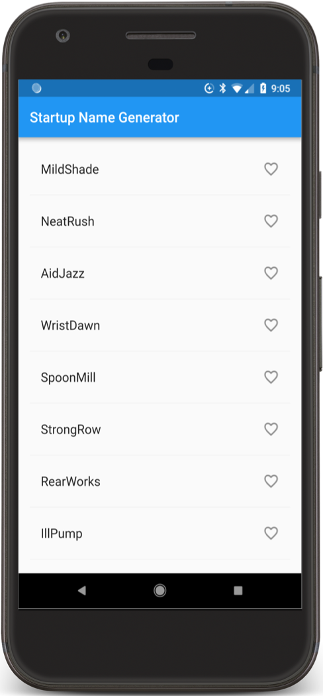
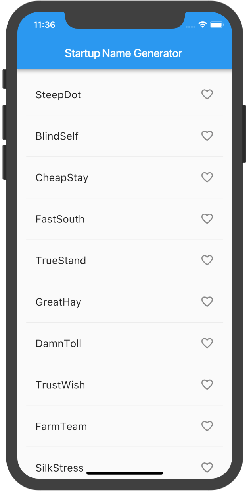
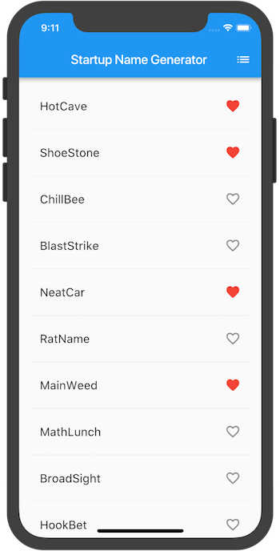
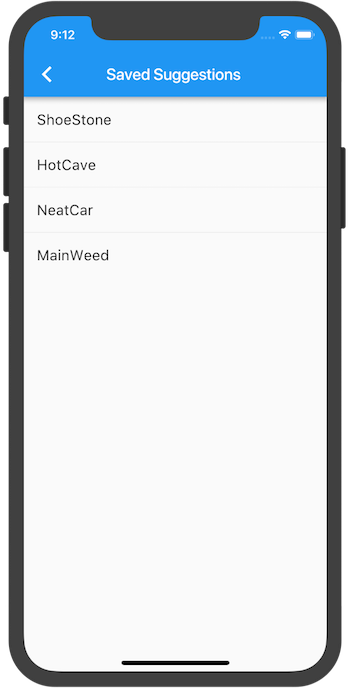
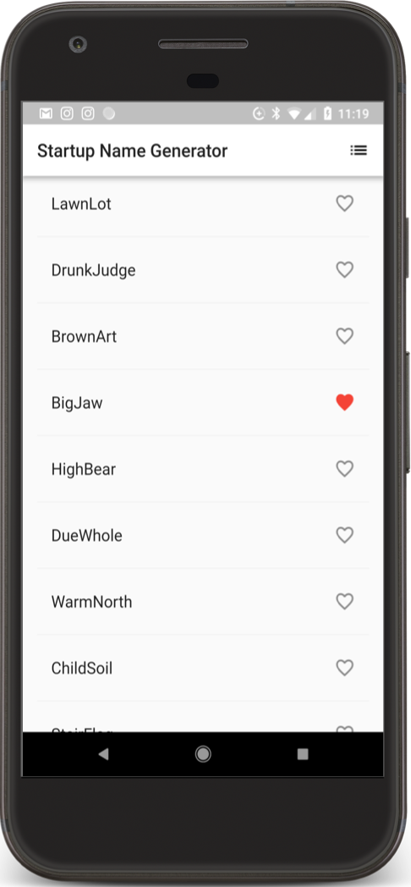
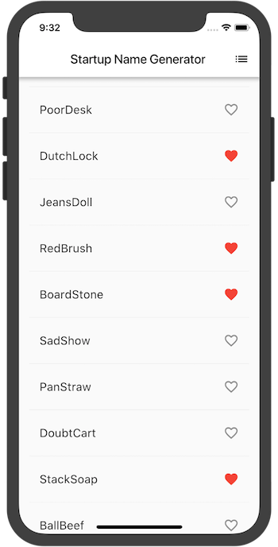

Flutterは、GoogleのUIツールキットです。これは単一のコードベースからモバイル、ウェブ、デスクトップ向けのネイティブにコンパイルされた美しいアプリケーションを構築するためのツールです。Flutterは既存のコードと一緒に動作し、世界中の開発者や組織で使用されている、無料でオープンソースのプロダクトです。
このコードラボでは、基本的なモバイルFlutterアプリを拡張して、インタラクティブ機能を追加します。また、ユーザーが移動できる2つ目のページ（ルートと呼びます）を作成します。最後に、アプリのテーマ（色）を変更します。このコードラボでは、パート1を拡張して遅延読込される無限リストを作成しますが、パート2から始めたい方のために、開始コードを提供します。
パート2で学べること
- iOS、Android、Webで自然に見えるFlutterアプリの書き方
- ホットリロードで開発期間を短縮する方法
- Stateful widgetにインタラクティブ機能を追加する方法
- セカンドスクリーンの作成と移動方法
- テーマを使ってアプリの外観を変更する方法
パート2で作るもの
まずは、あるスタートアップ企業のために、提案された名前のリストを無限に生成するシンプルなモバイルアプリから始めます。コードラボの終了時には、エンドユーザーが名前を選択・解除して、ベストなものを保存できるようになっています。アプリバーの右上にあるリストのアイコンをタップすると、お気に入りの名前だけがリストアップされた新しいページ（ルートと呼びます）に移動します。
次のアニメーションGIFは、完成したアプリがどのように動作するかを示しています。

パート1を完了していない場合は、Write your first Flutter app, part 1のSet up your Flutter environmentを参照して、Flutter開発のための環境を整えてください。
このコードラボのパート1を終えた方は、すでにスタートアップアプリであるstartup_namerを持っています。次のステップに進むことができます。
startup_namerをお持ちでない方は、以下の手順で入手できますのでご安心ください。
シンプルでテンプレート化されたFlutterアプリを作成します。startup_namerという名前のFlutterプロジェクトを作成し、以下のようにnull safetyに移行させます。
$ flutter create startup_namer
$ cd startup_namer
$ dart migrate --apply-changesほとんどの場合、Dartのコードが格納されているlib/main.dartを編集します。
lib/main.dartからすべてのコードを削除します。このファイルのコードで置き換えると、提案されているスタートアップ名のリストが無限に、かつ遅延読込されて表示されます。
english_words パッケージを追加するよう pubspec.yamlを更新します。
dependencies:
flutter:
sdk: flutter
cupertino_icons: ^1.0.2
english_words: ^4.0.0-0 // NEWenglish_words パッケージでは、ランダムな単語のペアを生成し、これをスタートアップの名前候補として使用します。
Android StudioのエディタビューでPubspecを見ながら、右上のPub getをクリックすると、パッケージがプロジェクトに取り込まれます。コンソールに以下のように表示されるはずです。
flutter pub get
Running "flutter pub get" in startup_namer...
Process finished with exit code 0アプリを起動します。
好きなだけスクロールすると、スタートアップの名前の候補が次々と出てきます。
このステップでは、各行にハートのアイコンを追加します。次のステップでは、それらをタップできるようにして、お気に入りを保存します。
_RandomWordsStateに_saved Setを追加します。この Set には、ユーザーが気に入った単語のペアが保存されます。適切に実装されたSet は、重複したエントリを許可しないため、ListよりもSetの方が好ましいです。
class _RandomWordsState extends State<RandomWords> {...
final _suggestions = <WordPair>[];
final _saved = <WordPair>{}; // NEW
final _biggerFont = TextStyle(fontSize: 18.0);
...
}_buildRow関数で、単語のペアがまだお気に入りに追加されていないことを確認するために、alreadySavedチェックを追加します。
Widget _buildRow(WordPair pair) {.
final alreadySaved = _saved.contains(pair); // NEW
...
}また、_buildRow()では、ListTileオブジェクトにハート型のアイコンを追加して、お気に入り登録ができるようにしています。次のステップでは、ハートのアイコンが動くようにします。
下のように、テキストの後にアイコンを追加します。
Widget _buildRow(WordPair pair) {
final alreadySaved = _saved.contains(pair);
return ListTile(
title: Text(
pair.asPascalCase,
style: _biggerFont,
),
trailing: Icon( // NEW from here...
alreadySaved ? Icons.favorite : Icons.favorite_border,
color: alreadySaved ? Colors.red : null,
), // ... to here.
);
}アプリをホットリロードします。
これで、各行に白抜きのハートが表示されますが、まだ機能しません。
アンドロイド | iOS |
 |  |
問題がありましたか？
アプリが正常に動作しない場合は、以下のリンクのコードを使って元に戻すことができます。
このステップでは、ハートのアイコンをタップできるようにします。ユーザーがリストのエントリーをタップして、お気に入りの状態を切り替えると、その単語のペアが保存されたお気に入りのセットに追加されたり、削除されたりします。
そのためには、_buildRow関数を修正します。単語エントリが既にお気に入りに追加されている場合、それを再度タップするとお気に入りから削除されます。タイルがタップされると、関数はsetState()を呼び出し、状態が変化したことをフレームワークに通知します。
_buildRowメソッドにonTapを追加します。
Widget _buildRow(WordPair pair) {
final alreadySaved = _saved.contains(pair);
return ListTile(
title: Text(
pair.asPascalCase,
style: _biggerFont,
),
trailing: Icon(
alreadySaved ? Icons.favorite : Icons.favorite_border,
color: alreadySaved ? Colors.red : null,
),
onTap: () { // NEW lines from here...
setState(() {
if (alreadySaved) {
_saved.remove(pair);
} else {
_saved.add(pair);
}
});
}, // ... to here.
);
}アプリをホットリロードします。
どのタイルをタップしても、そのエントリーをお気に入りに追加したり外したりできるはずです。タイルをタップすると、タップポイントからインクが飛び散るアニメーションが表示されます。
Android | iOS |
|
|


問題がありましたか？
アプリが正常に動作しない場合は、以下のリンクのコードを使って元に戻すことができます。
このステップでは、お気に入りを表示する新しいページ(Flutterではルートと呼びます)を追加します。ホームルートと新しいルートの間を移動する方法を学びます。
Flutterでは、Navigatorは、アプリのルートを含むスタックを管理します。ルートをNavigatorのスタックにプッシュすると、ディスプレイがそのルートに更新されます。Navigatorのスタックからルートをポップすると、ディスプレイは前のルートに戻ります。
次に、_RandomWordsStateの build メソッドで、AppBarにリストアイコンを追加します。ユーザーがリストアイコンをクリックすると、保存されたお気に入りを含む新しいルートがNavigatorにプッシュされ、アイコンが表示されます。
アイコンとそれに対応するアクションを build メソッドに追加します。
class _RandomWordsState extends State<RandomWords> {
...
@override
Widget build(BuildContext context) {
return Scaffold(
appBar: AppBar(
title: Text('Startup Name Generator'),
actions: [
IconButton(icon: Icon(Icons.list), onPressed: _pushSaved),
],
),
body: _buildSuggestions(),
);
}
...
}ヒント：ウィジェットのプロパティには、単一のウィジェット（child）を取るものと、アクションのように、角括弧（[]）で示されたウィジェット（children）の配列を取るものがあります。
_RandomWordsStateクラスに_pushSaved()関数を追加しました。
void _pushSaved() {
}アプリをホットリロードします。アプリバーにリストのアイコン が表示されます。このアイコンをタップしても、_pushSaved関数が空なので、まだ何もできません。
次に、ルートを作成し、Navigatorのスタックにプッシュします。このアクションは、新しいルートを表示するために画面を変更します。新しいページのコンテンツは、MaterialPageRouteのbuilderプロパティの匿名関数で構築されます。
Navigator.pushを呼び出し、以下のようにルートをNavigatorのスタックにプッシュします。IDEは無効なコードについて警告が出ますが、次のセクションで修正します。
void _pushSaved() {
Navigator.of(context).push(
);
}次に、MaterialPageRouteとそのビルダーを追加します。とりあえず、ListTileの行を生成するコードを追加します。ListTileのdivideTiles()メソッドは、各ListTileの間に水平方向の区切り線を追加します。divided変数には、便利な関数であるtoList()によってリストに変換された最終的な行が格納されています。
以下のコードスニペットのように、コードを追加します。
void _pushSaved() {
Navigator.of(context).push(
MaterialPageRoute<void>(
// NEW lines from here...
builder: (BuildContext context) {
final tiles = _saved.map(
(WordPair pair) {
return ListTile(
title: Text(
pair.asPascalCase,
style: _biggerFont,
),
);
},
);
final divided = tiles.isNotEmpty
? ListTile.divideTiles(context: context, tiles: tiles).toList()
: <Widget>[];
return Scaffold(
appBar: AppBar(
title: Text('Saved Suggestions'),
),
body: ListView(children: divided),
);
}, // ...to here.
),
);
}builderプロパティは、SavedSuggestionsという名前の新しいルートのアプリバーを含むScaffoldを返します。新しいルートの本体は、ListTilesの行を含むListViewで構成されています。各行はディバイダー(区切り線)で区切られています。
アプリをホットリロードします。いくつかのお気に入りの選択を追加し、アプリバーのリストアイコンをタップします。お気に入りを含む新しいルートが表示されます。ナビゲーターはアプリバーに矢印型の戻るボタンを追加することに注意しましょう。 Navigator.popを明示的に実装する必要はありません。戻るボタンをタップすると、ホームルートに戻ります。
iOS - Main route | iOS - Saved suggestions route |
 |  |
問題がありましたか？
アプリが正常に動作しない場合は、以下のリンクのコードを使って元に戻すことができます。
このステップでは、アプリのテーマを変更します。テーマは、アプリのルック＆フィールを制御します。物理的なデバイスやエミュレータに依存するデフォルトのテーマを使用するか、オリジナルテーマをカスタマイズすることができます。
ThemeDataクラスを設定することで、アプリのテーマ(ここではアプリ全体 UI の色やサイズなどの統一表現を表しています)を簡単に変更することができます。このアプリではデフォルトのテーマを使用していますが、アプリのプライマリカラーを白に変更します。
MyAppクラスで色を変更します。
class MyApp extends StatelessWidget {
@override
Widget build(BuildContext context) {
return MaterialApp(
title: 'Startup Name Generator',
theme: ThemeData( // Add the 3 lines from here...
primaryColor: Colors.white,
), // ... to here.
home: RandomWords(),
);
}
}アプリをホットリロードします。アプリバーも含めて背景全体が白になります。
練習として、ThemeDataを使ってUIの他の部分を変更してみましょう。MaterialライブラリのColorsクラスには多くの色定数が用意されており、それらを使って試すことができます。ホットリロードにより、UIを素早く簡単に試すことができます。
Android | iOS |
 |  |
問題がありましたか？
もしうまく動かなければ、以下のリンクで最終的なアプリのコードを確認してください。
あなたは以下のようにして、iOSとAndroidで動作するインタラクティブなFlutterアプリを書きました:
- Dartのコードを書く
- ホットリロードによる開発サイクルの短縮化
- ステートフルウィジェットを実装して、アプリにインタラクティブ性を付加する
- ルートの作成と、ホームルートと新ルート間の遷移ロジックの追加
- テーマを使ってアプリのUIを変える方法を学ぶ
Flutter SDKの詳細については、以下のリソースをご参照ください:
- Flutterのレイアウト
- Flutterアプリにインタラクティブ性を持たせる
- ウィジェットの紹介
- Android開発者のためのFlutter
- React Native開発者のためのFlutter
- ウェブ開発者のためのFlutter
- Flutter のYouTubeチャンネル
その他のリソースは以下の通りです:
また、Flutterのコミュニティにも参加してください！